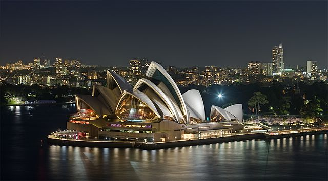
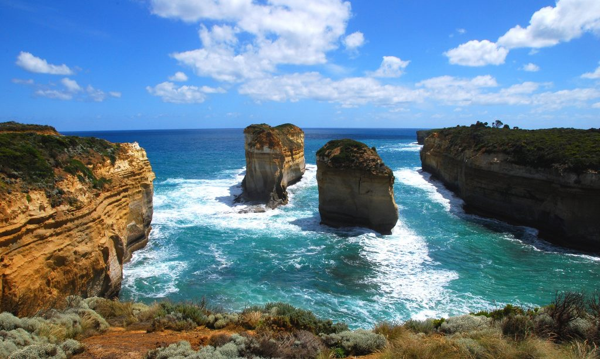

✪ For women, by women. ✪
Australia(86) FIVE STARS:
The vibrant art scene and charming laid-back atmosphere, along with the cultural diversity of its inhabitants, their friendly nature, and the high quality of life here, make Australia a wonderful, welcoming country. It is also considered one of the safest countries in the world overall!
Sydney (low risk)
Enjoy the sunny beaches, the stunningly beautiful harbor with the Harbour Bridge and Opera House. Sydney is a city alive with wildlife. If you want to experience this wondrous collection of wildlife first hand, the best place is the Botanic Gardens in the heart of the city.
Adelaide (low risk)
The capital of South Australia, Adelaide is one of the first cities to grant women the right to vote, and has significantly low sexual discrimination. A very diverse city, whether you want to hike to a waterfall, visit a zoo, go to the mall, or even go watch a match at the oval, Adelaide’s got it all.
